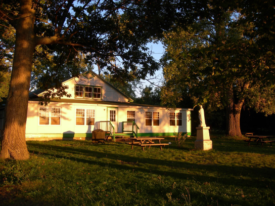
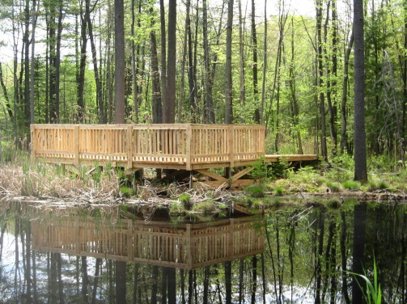

8 octobre 2020. Note: Le parc étant maintenant en zone rouge, les activités organisées sont interdites. Les sentiers du parc demeurent accessibles. Les services offerts sur place sont toutefois limités. Les mesures de distanciation sociale et d'hygiène respiratoire sont toujours prônées pour la sécurité de tous.
Le Parc abrite une extraordinaire biodiversité, comprenant des arbres d’âges et d’essences très variés. On y retrouve, entre autres, un des rares boisés de pins encore intacts, contenant plus de 360 espèces de champignons, dont 29 sont qualifiées de rares. Le Parc recèle aussi 15 milieux humides. On y dénombre 79 espèces d’oiseaux, dix espèces d’anoures, de salamandres et de reptiles et plus de 260 espèces de fleurs.
On y trouve aussi des espèces qu’on retrouve habituellement dans la forêt boréale du Nord québécois. S’y sont établis les espèces végétales suivantes : la savoyane, le thé du Labrador, la sarracénie pourprée (plante insectivore) et le petit prêcheur. Le pic à dos noir s’y est également installé. Le site a su préserver, jusqu’à présent, une certaine intégrité écologique que nous nous engageons à sauvegarder pour les générations futures.
La Coopérative de solidarité, créée en 2006, réunit la Colonie des Grèves de Contrecœur, le Cégep de Sorel-Tracy, Rio Tinto Fer et Titane inc. ,Kinéglobe et les Villes de Contrecœur et de Sorel-Tracy. Elle porte le projet de créer un parc accessible à tous, dans un espace naturel exceptionnel. Ce parc, appelé à devenir un laboratoire et une vitrine sur des expériences innovantes de développement durable et de technologies vertes, vise aussi la réappropriation de cet espace par la population locale. Le Parc des Grèves, qui présente un excellent potentiel de conservation et de mise en valeur à des fins récréatives, de sensibilisation et d’éducation, s’inscrira dans la dynamique de développement durable mise de l’avant par la région de Sorel-Tracy. Milieu de vie pour la population locale, le Parc saura aussi attirer l’attention des touristes de tout le Québec en proposant aux familles une approche novatrice en matière de sport et de plein air et des activités conçues pour susciter leurs préoccupations écologiques.
Afin que votre visite soit la plus agréable possible, merci de respecter la réglementation suivante :
N'hésitez pas à communiquer avec nous pour de plus amples informations.
Pour votre bien-être et votre sécurité :